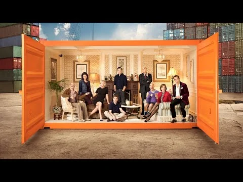
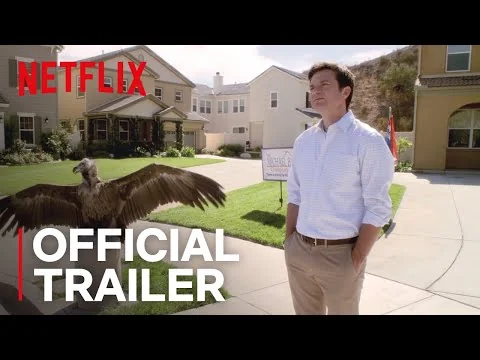
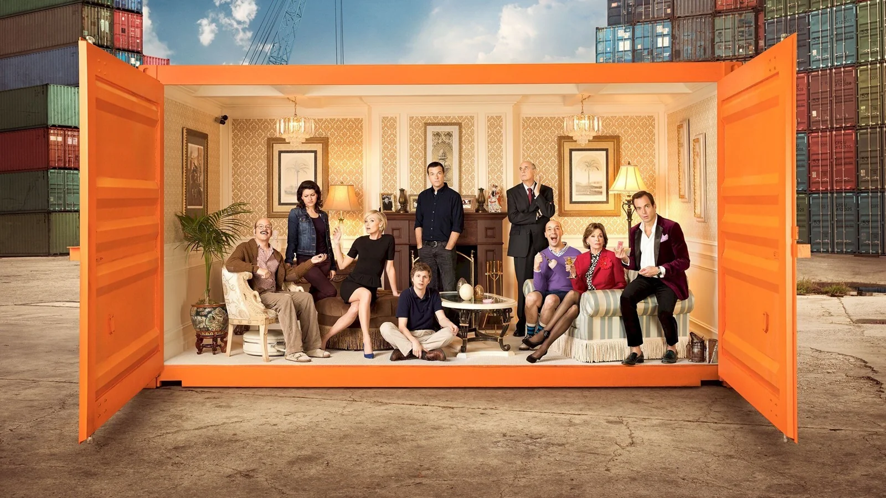

Netflix / Entertainment
Arrested Development
Bringing the Bluths back. Bringing fans to Netflix.
Client / Platform
Netflix
Focus
Series launch
Scope
Fan engagement / Integrated campaign

A coordinated campaign announcing a cult favorite’s return and establishing Netflix as its new home.
The challenge
Announce the series’ return with its original cast, reconnect with fans, and explain that the new season would live on Netflix.
The approach
Time campaign activity around press cycles so the show’s return and its new streaming home stayed part of the conversation.
My contribution
I worked on the launch campaign that brought together the series’ return, its original cast, and its move to Netflix.
The campaign in action
The work.

Play film / 01
Play film / 02


Keep exploring / Related work
Orange Is the New Black
The next conversation